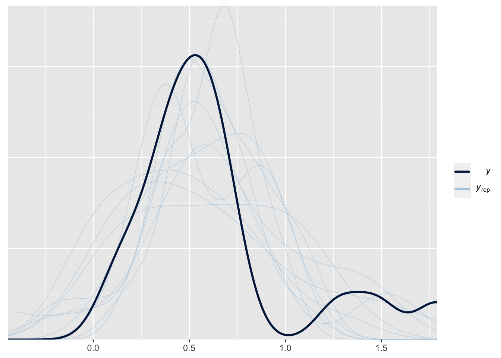
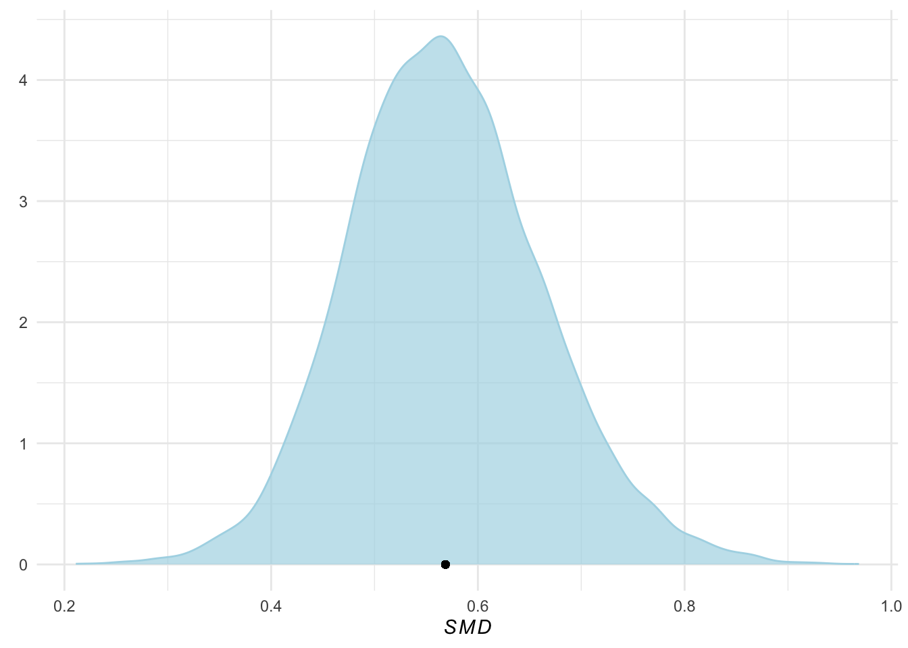
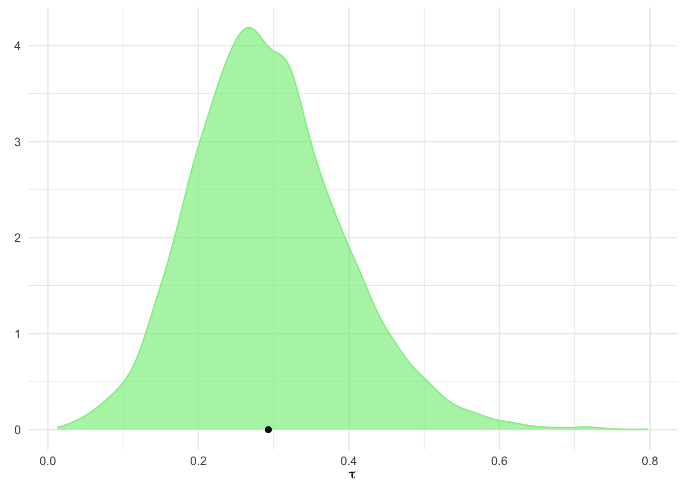
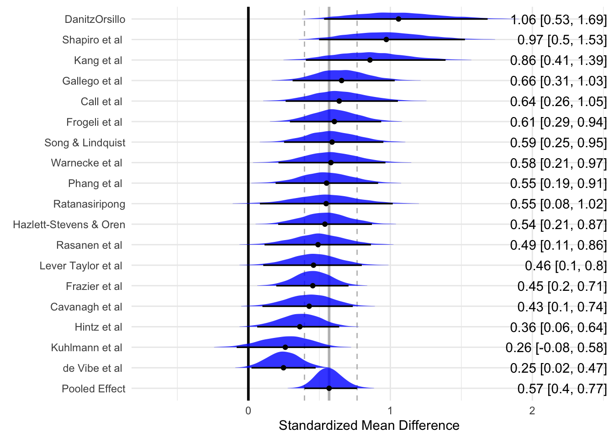

library(brms)13 Bayesiaanse Meta-Analyse
13.1 Theorie
Hoewel meta-analyses meestal worden uitgevoerd met behulp van frequentistische statistieken (zoals in de vorige hoofdstukken die werden uitgevoerd met de meta en metafor-pakketten), is het ook mogelijk om Bayesiaanse meta-analyses uit te voeren (die met andere pakketten worden uitgevoerd, zoals in dit hoofdstuk met het brms-pakket).
Er zitten enkele voordelen aan Bayesiaanse meta-analyse:
Bayesiaanse methoden maken het mogelijk om de onzekerheid in onze schatting van \(\tau^2\). Ze kunnen ook superieur zijn in het schatten van gepoolde effecten, vooral als het aantal geïncludeerde onderzoeken klein is (wat in de praktijk vaak het geval is).
Bayesiaanse methoden produceren volledige posterior verdelingen voor zowel \(\mu\) en \(\tau^2\). Dit maakt het mogelijk om de exacte kans te berekenen dat \(\mu\) of \(\tau^2\) kleiner of groter is dan een bepaalde waarde. Dit in tegenstelling tot frequentistische methoden, waarbij we alleen betrouwbaarheidsintervallen berekenen. Echter, (95%) betrouwbaarheidsintervallen stellen alleen dat, als de gegevensbemonstering vele, vele keren zou worden herhaald, de werkelijke waarde van een populatieparameter (zoals \(\mu\) of \(\tau^2\)) in 95% van de steekproeven binnen het bereik van het betrouwbaarheidsinterval zou vallen. Ze vertellen ons niet hoe groot de kans is dat de ware parameter tussen twee gespecificeerde waarden ligt.
Bayesiaanse methoden stellen ons in staat om voorkennis (prior knowledge) en aannames te integreren bij het berekenen van meta-analyses.
Bayesiaanse meta-analyse wordt in dit hoofdstuk gebaseerd op het Bayesiaanse hiërarchische model. De kernprincipes van dit model zijn identiek aan het “conventionele” random-effects model. Het verschil is echter dat er (informatieve, zwak informatieve of niet-informatieve) prior distributies worden aangenomen voor \(mu\)μ en \(tau^2\).
Voor Bayesiaanse meta-analyse-modellen is het meestal een goed idee om uit te gaan van zwakke informatieve priors. Zwakke informatieve priors worden gebruikt om een zwak geloof weer te geven dat sommige waarden geloofwaardiger zijn dan andere. Voor het specificeren van de prior-verdeling voor de heterogeniteitsvariantie \(\tau^2\) tussen studies kan de half-Cauchy distributies worden gebruikt. Half-Cauchy distributies zijn bijzonder geschikt voor deze taak omdat ze alleen gedefinieerd zijn voor positieve waarden en een zwaardere staart (langere uiterste waarden) hebben. Dit kan worden gebruikt om aan te geven dat zeer hoge waarden van \(\tau^2\) minder waarschijnlijk zijn, maar nog steeds goed mogelijk.
Bij het draaien van Bayesiaanse meta-analysemodellen is het belangrijk om (1) altijd te controleren of het model voldoende iteraties bevat om te convergeren (bijvoorbeeld door de \(hat{R}\) waarden te controleren), en om (2) sensitiviteits analyses uit te voeren met verschillende prioriteitspecificaties om de invloed op de resultaten te evalueren.
13.2 Praktijk
13.2.1 Het model draaien
Nu gaan we een Bayesiaanse meta-analyse uitvoeren en dat doen we met het brms-pakket. Dat moet op jouw computer geïnstalleerd zijn. Om brms op jouw computer te krijgen, moet je overigens wel eerst stan op jouw computer hebben staan. Zie hier de handleiding.
We laden brms eerst.
1. Importeren en bekijken van dataset
library(tidyverse) # voor databewerking
library(dmetar) # voor de data
library(meta) # voor de meta-analyse
data(ThirdWave)
glimpse(ThirdWave)Rows: 18
Columns: 8
$ Author <chr> "Call et al.", "Cavanagh et al.", "DanitzOrsillo"…
$ TE <dbl> 0.7091362, 0.3548641, 1.7911700, 0.1824552, 0.421…
$ seTE <dbl> 0.2608202, 0.1963624, 0.3455692, 0.1177874, 0.144…
$ RiskOfBias <chr> "high", "low", "high", "low", "low", "low", "high…
$ TypeControlGroup <chr> "WLC", "WLC", "WLC", "no intervention", "informat…
$ InterventionDuration <chr> "short", "short", "short", "short", "short", "sho…
$ InterventionType <chr> "mindfulness", "mindfulness", "ACT", "mindfulness…
$ ModeOfDelivery <chr> "group", "online", "group", "group", "online", "g…In Bayesiaanse modellen is het belangrijk om priors te specificeren. We specificeren hier een prior voor de intercept en de standaarddeviatie van de effectgroottes.
priors <- c(prior(normal(0,1), class = Intercept),
prior(cauchy(0,0.5), class = sd))Nu kunnen we gaan modelleren.
2. Modelleren In de syntax hieronder wordt de formule voor het model gespecificeerd. Het {brms} pakket gebruikt een regressieformule notatie, waarin een uitkomst (in ons geval een waargenomen effectgrootte) \(y\) wordt voorspeld door een of meer voorspellers \(x\). Een tilde (\({\sim}\)) wordt gebruikt om aan te geven dat er een voorspellende relatie is: \(y {\sim} x\).
Meta-analyses zijn enigszins speciaal, omdat we geen variabele hebben die de effectgrootte voorspelt (tenzij we een meta-regressie uitvoeren). Dit betekent dat \(x\) moet worden vervangen door 1, wat duidt op een intercept-only model. Bovendien kunnen we niet simpelweg de effectgrootte van elke studie in \(y\) gebruiken. We moeten ook studies met een hogere precisie (d.w.z. steekproefgrootte) een groter gewicht geven. Dit kan worden gedaan door \(y|se(se_y)\) te gebruiken in plaats van alleen y, waarbij het \(se(se_y)\) deel staat voor de standaardfout van elke effectgrootte y in onze dataset.
Als we een random-effectmodel willen gebruiken, is de laatste stap het toevoegen van een random-effectterm \((1|studie)\) aan de rechterkant van de formule. Dit specificeert dat de effectgroottes in \(y\) verondersteld worden genest te zijn binnen studies, waarvan de ware effecten zelf willekeurige trekkingen zijn uit een overkoepelende populatie van ware effectgroottes. Als we een model met vast effect willen gebruiken, kunnen we deze term gewoon weglaten. De algemene volledige formule voor een random-effect model ziet er dan als volgt uit: \(y|se(se_y) ~ 1 + (1|random)\).
Let op, onderstaande code kan enige tijd duren om uit te voeren.
m.brm <- brm(TE|se(seTE) ~ 1 + (1|Author),
data = ThirdWave,
prior = priors,
iter = 4000)Compiling Stan program...Start sampling
SAMPLING FOR MODEL 'anon_model' NOW (CHAIN 1).
Chain 1:
Chain 1: Gradient evaluation took 4.7e-05 seconds
Chain 1: 1000 transitions using 10 leapfrog steps per transition would take 0.47 seconds.
Chain 1: Adjust your expectations accordingly!
Chain 1:
Chain 1:
Chain 1: Iteration: 1 / 4000 [ 0%] (Warmup)
Chain 1: Iteration: 400 / 4000 [ 10%] (Warmup)
Chain 1: Iteration: 800 / 4000 [ 20%] (Warmup)
Chain 1: Iteration: 1200 / 4000 [ 30%] (Warmup)
Chain 1: Iteration: 1600 / 4000 [ 40%] (Warmup)
Chain 1: Iteration: 2000 / 4000 [ 50%] (Warmup)
Chain 1: Iteration: 2001 / 4000 [ 50%] (Sampling)
Chain 1: Iteration: 2400 / 4000 [ 60%] (Sampling)
Chain 1: Iteration: 2800 / 4000 [ 70%] (Sampling)
Chain 1: Iteration: 3200 / 4000 [ 80%] (Sampling)
Chain 1: Iteration: 3600 / 4000 [ 90%] (Sampling)
Chain 1: Iteration: 4000 / 4000 [100%] (Sampling)
Chain 1:
Chain 1: Elapsed Time: 0.922 seconds (Warm-up)
Chain 1: 0.885 seconds (Sampling)
Chain 1: 1.807 seconds (Total)
Chain 1:
SAMPLING FOR MODEL 'anon_model' NOW (CHAIN 2).
Chain 2:
Chain 2: Gradient evaluation took 1e-05 seconds
Chain 2: 1000 transitions using 10 leapfrog steps per transition would take 0.1 seconds.
Chain 2: Adjust your expectations accordingly!
Chain 2:
Chain 2:
Chain 2: Iteration: 1 / 4000 [ 0%] (Warmup)
Chain 2: Iteration: 400 / 4000 [ 10%] (Warmup)
Chain 2: Iteration: 800 / 4000 [ 20%] (Warmup)
Chain 2: Iteration: 1200 / 4000 [ 30%] (Warmup)
Chain 2: Iteration: 1600 / 4000 [ 40%] (Warmup)
Chain 2: Iteration: 2000 / 4000 [ 50%] (Warmup)
Chain 2: Iteration: 2001 / 4000 [ 50%] (Sampling)
Chain 2: Iteration: 2400 / 4000 [ 60%] (Sampling)
Chain 2: Iteration: 2800 / 4000 [ 70%] (Sampling)
Chain 2: Iteration: 3200 / 4000 [ 80%] (Sampling)
Chain 2: Iteration: 3600 / 4000 [ 90%] (Sampling)
Chain 2: Iteration: 4000 / 4000 [100%] (Sampling)
Chain 2:
Chain 2: Elapsed Time: 1.137 seconds (Warm-up)
Chain 2: 0.497 seconds (Sampling)
Chain 2: 1.634 seconds (Total)
Chain 2:
SAMPLING FOR MODEL 'anon_model' NOW (CHAIN 3).
Chain 3:
Chain 3: Gradient evaluation took 1e-05 seconds
Chain 3: 1000 transitions using 10 leapfrog steps per transition would take 0.1 seconds.
Chain 3: Adjust your expectations accordingly!
Chain 3:
Chain 3:
Chain 3: Iteration: 1 / 4000 [ 0%] (Warmup)
Chain 3: Iteration: 400 / 4000 [ 10%] (Warmup)
Chain 3: Iteration: 800 / 4000 [ 20%] (Warmup)
Chain 3: Iteration: 1200 / 4000 [ 30%] (Warmup)
Chain 3: Iteration: 1600 / 4000 [ 40%] (Warmup)
Chain 3: Iteration: 2000 / 4000 [ 50%] (Warmup)
Chain 3: Iteration: 2001 / 4000 [ 50%] (Sampling)
Chain 3: Iteration: 2400 / 4000 [ 60%] (Sampling)
Chain 3: Iteration: 2800 / 4000 [ 70%] (Sampling)
Chain 3: Iteration: 3200 / 4000 [ 80%] (Sampling)
Chain 3: Iteration: 3600 / 4000 [ 90%] (Sampling)
Chain 3: Iteration: 4000 / 4000 [100%] (Sampling)
Chain 3:
Chain 3: Elapsed Time: 0.916 seconds (Warm-up)
Chain 3: 0.912 seconds (Sampling)
Chain 3: 1.828 seconds (Total)
Chain 3:
SAMPLING FOR MODEL 'anon_model' NOW (CHAIN 4).
Chain 4:
Chain 4: Gradient evaluation took 9e-06 seconds
Chain 4: 1000 transitions using 10 leapfrog steps per transition would take 0.09 seconds.
Chain 4: Adjust your expectations accordingly!
Chain 4:
Chain 4:
Chain 4: Iteration: 1 / 4000 [ 0%] (Warmup)
Chain 4: Iteration: 400 / 4000 [ 10%] (Warmup)
Chain 4: Iteration: 800 / 4000 [ 20%] (Warmup)
Chain 4: Iteration: 1200 / 4000 [ 30%] (Warmup)
Chain 4: Iteration: 1600 / 4000 [ 40%] (Warmup)
Chain 4: Iteration: 2000 / 4000 [ 50%] (Warmup)
Chain 4: Iteration: 2001 / 4000 [ 50%] (Sampling)
Chain 4: Iteration: 2400 / 4000 [ 60%] (Sampling)
Chain 4: Iteration: 2800 / 4000 [ 70%] (Sampling)
Chain 4: Iteration: 3200 / 4000 [ 80%] (Sampling)
Chain 4: Iteration: 3600 / 4000 [ 90%] (Sampling)
Chain 4: Iteration: 4000 / 4000 [100%] (Sampling)
Chain 4:
Chain 4: Elapsed Time: 0.911 seconds (Warm-up)
Chain 4: 0.808 seconds (Sampling)
Chain 4: 1.719 seconds (Total)
Chain 4: 3. Resultaten bekijken Nu kun je de resultaten bekijken. Maar kijk wel of het model heeft geconvergeerd (dat betekent dat je er zeker van bent dat het MCMC algoritme de optimale oplossing gevonden heeft). Bekijk de \(hat{R}\) waarden. De \(hat{R}\) waarden geven aan hoeveel de ketens van het model van elkaar verschillen. Als de \(hat{R}\) waarden dicht bij 1 liggen, is het model geconvergeerd.
summary(m.brm) Family: gaussian
Links: mu = identity; sigma = identity
Formula: TE | se(seTE) ~ 1 + (1 | Author)
Data: ThirdWave (Number of observations: 18)
Draws: 4 chains, each with iter = 4000; warmup = 2000; thin = 1;
total post-warmup draws = 8000
Group-Level Effects:
~Author (Number of levels: 18)
Estimate Est.Error l-95% CI u-95% CI Rhat Bulk_ESS Tail_ESS
sd(Intercept) 0.29 0.10 0.11 0.51 1.00 2358 3383
Population-Level Effects:
Estimate Est.Error l-95% CI u-95% CI Rhat Bulk_ESS Tail_ESS
Intercept 0.57 0.09 0.40 0.77 1.00 3400 4222
Family Specific Parameters:
Estimate Est.Error l-95% CI u-95% CI Rhat Bulk_ESS Tail_ESS
sigma 0.00 0.00 0.00 0.00 NA NA NA
Draws were sampled using sampling(NUTS). For each parameter, Bulk_ESS
and Tail_ESS are effective sample size measures, and Rhat is the potential
scale reduction factor on split chains (at convergence, Rhat = 1).4. Valideren Je kunt de resultaten valideren door de posterior predictive checks te bekijken. Dit zijn de voorspelde effectgroottes van het model. Voor validatie kunnen we verwachten dat de replicaties (blauwe lijnen) ongeveer gelijk zijn aan die van de waargenomen gegevens (zwarte lijn). Dit kan eenvoudig worden gecontroleerd met de uitvoer van de functie pp_check.
pp_check(m.brm)Using 10 posterior draws for ppc type 'dens_overlay' by default.
5. Interpreteren van de resultaten
We kunnen beginnen met het interpreteren van de resultaten door eerst te kijken naar de effecten op groepsniveau in onze samenvattende uitvoer. Dit gedeelte is gereserveerd voor het willekeurige effect dat we in onze formule hebben gedefinieerd. Omdat we een random-effect meta-analysemodel hebben toegepast, is de variabele ~Author, die de individuele studies aangeeft, gemodelleerd met een random intercept.
Zoals we eerder beschreven, vertegenwoordigt dit onze aanname op niveau 2 dat elke studie zijn eigen “ware” effectgrootte heeft, die is genomen uit een overkoepelende verdeling van ware effectgroottes. We zien ook dat ons effect op groepsniveau 18 niveaus heeft, wat overeenkomt met de \(K= 18\) onderzoeken in onze gegevens.
ranef(m.brm)$Author
, , Intercept
Estimate Est.Error Q2.5 Q97.5
Call et al. 0.07114896 0.2029978 -0.31927299 0.48939355
Cavanagh et al. -0.14022801 0.1768387 -0.51371919 0.18798225
DanitzOrsillo 0.48903030 0.2832536 0.01105400 1.09039454
de Vibe et al. -0.32113208 0.1471973 -0.61892323 -0.04624428
Frazier et al. -0.11490265 0.1517988 -0.43087436 0.17376382
Frogeli et al. 0.03706950 0.1715014 -0.30476920 0.37987216
Gallego et al. 0.08797101 0.1879824 -0.26925234 0.47810895
Hazlett-Stevens & Oren -0.02954891 0.1810667 -0.39442815 0.31962005
Hintz et al. -0.20631877 0.1657774 -0.54418644 0.09843247
Kang et al. 0.28771071 0.2443427 -0.14624887 0.79920718
Kuhlmann et al. -0.30840494 0.1912425 -0.70181421 0.03683617
Lever Taylor et al. -0.10981177 0.1891373 -0.50358874 0.25119769
Phang et al. -0.01802969 0.1892723 -0.40379303 0.35221968
Rasanen et al. -0.07800406 0.1959571 -0.47836214 0.29897684
Ratanasiripong -0.02098242 0.2299182 -0.48788934 0.43436685
Shapiro et al. 0.40297354 0.2535675 -0.02844762 0.95116680
Song & Lindquist 0.02109764 0.1850037 -0.34585228 0.37872260
Warnecke et al. 0.01283180 0.1949736 -0.38540961 0.40146856Het volgende deel van de uitvoer dat we kunnen interpreteren zijn de effecten op populatieniveau. Dit deel geeft de “vaste” populatieparameters weer die we hebben gemodelleerd. In ons geval is dit \(\mu\) de totale effectgrootte van onze meta-analyse.
In de uitvoer zien we dat de schatting een (voor bias gecorrigeerde) SMD van \(0,57\) is, met het 95% geloofwaardige interval variërend van \(95%CrI: 0,39-0,76\). Dit geeft aan dat de interventies die in deze meta-analyse zijn onderzocht een matig groot algeheel effect hebben.
Omdat dit een Bayesiaans model is, vinden we hier geen p-waarden. Maar ons voorbeeld zou moeten onderstrepen dat we ook redelijke conclusies kunnen trekken zonder onze toevlucht te hoeven nemen tot klassieke significantietests.
Wat we goed kunnen doen in een Bayesiaanse, maar niet in een frequentistische meta-analyse, is de parameters die we willen schatten probabilistisch modelleren. Het Bayesiaanse model schat niet alleen de parameters die van belang zijn, maar een hele posterior verdeling voor \(\tau^2\) en \(\mu\), waar we vrij eenvoudig toegang toe hebben. We hoeven alleen maar de posterior_samples functie te gebruiken.
post.samples <- posterior_samples(m.brm, c("^b", "^sd"))Warning: Method 'posterior_samples' is deprecated. Please see ?as_draws for
recommended alternatives.names(post.samples)[1] "b_Intercept" "sd_Author__Intercept"Het resulterende dataframe bevat twee kolommen: b_Intercept, de posterior steekproefgegevens voor de gepoolde effectgrootte, en sd_Author_Intercept, die voor de heterogeniteit τ tussen de studies. We hernoemen de kolommen smd en tau om de naam informatiever te maken.
names(post.samples) <- c("smd", "tau")Nu kunnen we density plots maken van deze posterior distributies. We gebruiken het ggplot pakket.
ggplot(aes(x = smd), data = post.samples) +
geom_density(fill = "lightblue", # set the color
color = "lightblue", alpha = 0.7) +
geom_point(y = 0, # add point at mean
x = mean(post.samples$smd)) +
labs(x = expression(italic(SMD)),
y = element_blank()) +
theme_minimal()
ggplot(aes(x = tau), data = post.samples) +
geom_density(fill = "lightgreen", # set the color
color = "lightgreen", alpha = 0.7) +
geom_point(y = 0,
x = mean(post.samples$tau)) + # add point at mean
labs(x = expression(tau),
y = element_blank()) +
theme_minimal()
We kunnen ook probabilistische uitspraken doen over de kans dat het ware effect groter of kleiner is dan een bepaalde drempelwaarde (bv dat het gepoolde effect kleiner is dan 0.30). We kunnen dit doen door de ecdf-functie te gebruiken.
smd.ecdf <- ecdf(post.samples$smd)
smd.ecdf(0.3)[1] 0.00225We zien dat met 0,21% de kans dat ons gepoolde effect kleiner is dan 0,30 heel erg klein is. Ervan uitgaande dat de cut-off geldig is, zou dit betekenen dat het totale effect van de interventie dat we in deze meta-analyse vinden zeer waarschijnlijk zinvol is.
6. Een forest plot genereren Forest plots kunnen nog niet in brms worden gemaakt. We doen het zelf en doen wat bewerkingen via tidybayes.
Laad deze pakketten.
library(tidybayes)
Attaching package: 'tidybayes'The following objects are masked from 'package:brms':
dstudent_t, pstudent_t, qstudent_t, rstudent_tlibrary(dplyr)
library(ggplot2)
library(ggridges)
Attaching package: 'ggridges'The following objects are masked from 'package:tidybayes':
scale_point_color_continuous, scale_point_color_discrete,
scale_point_colour_continuous, scale_point_colour_discrete,
scale_point_fill_continuous, scale_point_fill_discrete,
scale_point_size_continuouslibrary(glue)
library(stringr)
library(forcats)Voordat we de plot kunnen genereren, moeten we de gegevens voorbereiden. We moeten de posterior distributie voor elke studie afzonderlijk extraheren (aangezien forest plots ook de specifieke effectgrootte van elke studie weergeven). Om dit te bereiken, kunnen we de spread_draws functie in het {tidybayes} pakket gebruiken. De functie heeft drie argumenten nodig als invoer: ons gepaste {brms} model, de random-effects factor waarmee de resultaten moeten worden geïndexeerd en de parameter die we willen extraheren (hier b_Intercept, omdat we de vaste term willen extraheren: de effectgrootte).
Met behulp van de mutate-functie in {dplyr} berekenen we de werkelijke effectgrootte van elke studie door de gepoolde effectgrootte b_Intercept op te tellen bij de geschatte afwijking van elke studie. We slaan het resultaat op als study.draws.
study.draws <- spread_draws(m.brm, r_Author[Author,], b_Intercept) %>%
mutate(b_Intercept = r_Author + b_Intercept)Vervolgens willen we de verdeling van het gepoolde effect op een vergelijkbare manier genereren (omdat in forest plots het samenvattende effect meestal in de laatste rij wordt weergegeven). Daarom passen we de code van hiervoor enigszins aan, waarbij we het tweede argument laten vallen om alleen het gepoolde effect te krijgen. De oproep tot muteren voegt alleen een extra kolom toe met de naam “Author”. We slaan het resultaat op als pooled.effect.draws.
pooled.effect.draws <- spread_draws(m.brm, b_Intercept) %>%
mutate(Author = "Pooled Effect")Vervolgens binden we study.draws en pooled.effect.draws samen in één dataframe. Vervolgens starten we weer een pipe, waarbij we eerst ungroup aanroepen en vervolgens mutate gebruiken om (1) de studielabels op te schonen (d.w.z. punten vervangen door spaties) en (2) de studiefactorniveaus te herschikken op effectgrootte (hoog naar laag). Het resultaat zijn de gegevens die we nodig hebben voor het plotten, die we opslaan als forest.data.
forest.data <- bind_rows(study.draws,
pooled.effect.draws) %>%
ungroup() %>%
mutate(Author = str_replace_all(Author, "[.]", " ")) %>%
mutate(Author = reorder(Author, b_Intercept))Ten slotte moet de forest plot ook de effectgrootte (SMD en betrouwbaarheidsinterval) van elke studie weergeven. Om dit te doen, gebruiken we onze nieuw gegenereerde forest.data dataset, groeperen deze op Author en gebruiken vervolgens de mean_qi functie om deze waarden te berekenen. We slaan de uitvoer op als forest.data.summary.
forest.data.summary <- group_by(forest.data, Author) %>%
mean_qi(b_Intercept)Nu kunnen we een forest plot maken met ggplot.
ggplot(aes(b_Intercept,
relevel(Author, "Pooled Effect",
after = Inf)),
data = forest.data) +
# Add vertical lines for pooled effect and CI
geom_vline(xintercept = fixef(m.brm)[1, 1],
color = "grey", size = 1) +
geom_vline(xintercept = fixef(m.brm)[1, 3:4],
color = "grey", linetype = 2) +
geom_vline(xintercept = 0, color = "black",
size = 1) +
# Add densities
geom_density_ridges(fill = "blue",
rel_min_height = 0.01,
col = NA, scale = 1,
alpha = 0.8) +
geom_pointintervalh(data = forest.data.summary,
size = 1) +
# Add text and labels
geom_text(data = mutate_if(forest.data.summary,
is.numeric, round, 2),
aes(label = glue("{b_Intercept} [{.lower}, {.upper}]"),
x = Inf), hjust = "inward") +
labs(x = "Standardized Mean Difference", # summary measure
y = element_blank()) +
theme_minimal()Warning: Using `size` aesthetic for lines was deprecated in ggplot2 3.4.0.
ℹ Please use `linewidth` instead.Warning: 'geom_pointintervalh' is deprecated.
Use 'geom_pointinterval' instead.
See help("Deprecated") and help("tidybayes-deprecated").Picking joint bandwidth of 0.0272